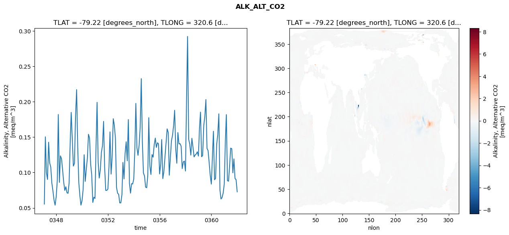
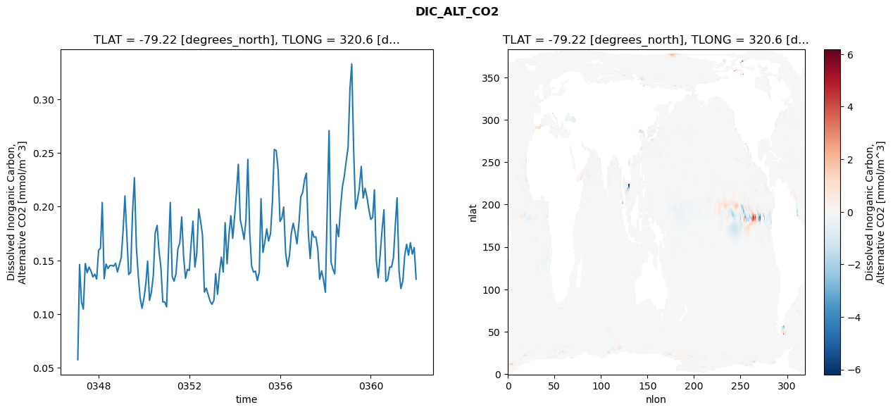
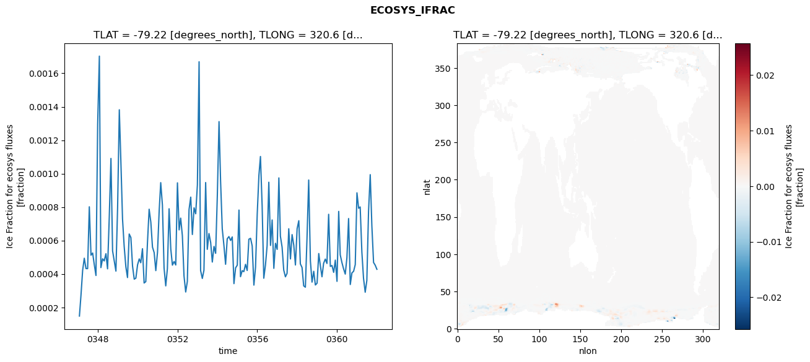
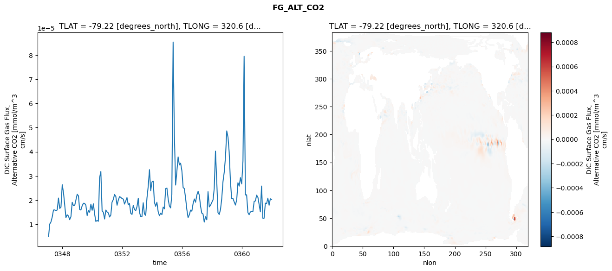

glb-dor_North_Atlantic_basin_038_1999-01-01_00152#
Simulation details#
Case: smyle.cdr-atlas-v0.glb-dor_North_Atlantic_basin_038_1999-01-01_00152.001
Basin: North_Atlantic_basin
Polygon: 38.0
Start date: 1999-01
Show code cell source Hide code cell source
import xarray as xr
import matplotlib.pyplot as plt
Show code cell source Hide code cell source
zarr_store = "/path/to/zarr/store"
# Parameters
zarr_store = "/global/cfs/projectdirs/m4746/Projects/Ocean-CDR-Atlas-v0/data/validation/smyle.cdr-atlas-v0.glb-dor_North_Atlantic_basin_038_1999-01-01_00152.001.validation.zarr"
Show code cell source Hide code cell source
%%time
ds_o = xr.open_zarr(zarr_store).compute()
ds_o
CPU times: user 568 ms, sys: 481 ms, total: 1.05 s
Wall time: 1.24 s
<xarray.Dataset> Size: 2MB
Dimensions: (nlat: 384, nlon: 320, time: 180)
Coordinates:
TLAT float64 8B -79.22
TLONG float64 8B 320.6
ULAT float64 8B -78.95
ULONG float64 8B 321.1
* time (time) object 1kB 0347-02-01 00:00:00 ... 0362-01-01 0...
z_t float32 4B 500.0
Dimensions without coordinates: nlat, nlon
Data variables:
ALK_ALT_CO2_diff (nlat, nlon) float32 492kB nan nan nan ... nan nan nan
ALK_ALT_CO2_rmse (time) float64 1kB 0.05544 0.1504 ... 0.08988 0.07276
DIC_ALT_CO2_diff (nlat, nlon) float32 492kB nan nan nan ... nan nan nan
DIC_ALT_CO2_rmse (time) float64 1kB 0.05759 0.1461 0.1114 ... 0.162 0.1326
ECOSYS_IFRAC_diff (nlat, nlon) float32 492kB nan nan nan ... nan nan nan
ECOSYS_IFRAC_rmse (time) float64 1kB 0.0001483 0.0002703 ... 0.0004279
FG_ALT_CO2_diff (nlat, nlon) float32 492kB nan nan nan ... nan nan nan
FG_ALT_CO2_rmse (time) float64 1kB 4.912e-06 1.006e-05 ... 2.03e-05xarray.Dataset
- nlat: 384
- nlon: 320
- time: 180
- TLAT()float64-79.22
- long_name :
- array of t-grid latitudes
- units :
- degrees_north
array(-79.22052261)
- TLONG()float64320.6
- long_name :
- array of t-grid longitudes
- units :
- degrees_east
array(320.56250892)
- ULAT()float64-78.95
- long_name :
- array of u-grid latitudes
- units :
- degrees_north
array(-78.95289509)
- ULONG()float64321.1
- long_name :
- array of u-grid longitudes
- units :
- degrees_east
array(321.12500894)
- time(time)object0347-02-01 00:00:00 ... 0362-01-...
- bounds :
- time_bound
- long_name :
- time
array([cftime.DatetimeNoLeap(347, 2, 1, 0, 0, 0, 0, has_year_zero=True), cftime.DatetimeNoLeap(347, 3, 1, 0, 0, 0, 0, has_year_zero=True), cftime.DatetimeNoLeap(347, 4, 1, 0, 0, 0, 0, has_year_zero=True), cftime.DatetimeNoLeap(347, 5, 1, 0, 0, 0, 0, has_year_zero=True), cftime.DatetimeNoLeap(347, 6, 1, 0, 0, 0, 0, has_year_zero=True), cftime.DatetimeNoLeap(347, 7, 1, 0, 0, 0, 0, has_year_zero=True), cftime.DatetimeNoLeap(347, 8, 1, 0, 0, 0, 0, has_year_zero=True), cftime.DatetimeNoLeap(347, 9, 1, 0, 0, 0, 0, has_year_zero=True), cftime.DatetimeNoLeap(347, 10, 1, 0, 0, 0, 0, has_year_zero=True), cftime.DatetimeNoLeap(347, 11, 1, 0, 0, 0, 0, has_year_zero=True), cftime.DatetimeNoLeap(347, 12, 1, 0, 0, 0, 0, has_year_zero=True), cftime.DatetimeNoLeap(348, 1, 1, 0, 0, 0, 0, has_year_zero=True), cftime.DatetimeNoLeap(348, 2, 1, 0, 0, 0, 0, has_year_zero=True), cftime.DatetimeNoLeap(348, 3, 1, 0, 0, 0, 0, has_year_zero=True), cftime.DatetimeNoLeap(348, 4, 1, 0, 0, 0, 0, has_year_zero=True), cftime.DatetimeNoLeap(348, 5, 1, 0, 0, 0, 0, has_year_zero=True), cftime.DatetimeNoLeap(348, 6, 1, 0, 0, 0, 0, has_year_zero=True), cftime.DatetimeNoLeap(348, 7, 1, 0, 0, 0, 0, has_year_zero=True), cftime.DatetimeNoLeap(348, 8, 1, 0, 0, 0, 0, has_year_zero=True), cftime.DatetimeNoLeap(348, 9, 1, 0, 0, 0, 0, has_year_zero=True), cftime.DatetimeNoLeap(348, 10, 1, 0, 0, 0, 0, has_year_zero=True), cftime.DatetimeNoLeap(348, 11, 1, 0, 0, 0, 0, has_year_zero=True), cftime.DatetimeNoLeap(348, 12, 1, 0, 0, 0, 0, has_year_zero=True), cftime.DatetimeNoLeap(349, 1, 1, 0, 0, 0, 0, has_year_zero=True), cftime.DatetimeNoLeap(349, 2, 1, 0, 0, 0, 0, has_year_zero=True), cftime.DatetimeNoLeap(349, 3, 1, 0, 0, 0, 0, has_year_zero=True), cftime.DatetimeNoLeap(349, 4, 1, 0, 0, 0, 0, has_year_zero=True), cftime.DatetimeNoLeap(349, 5, 1, 0, 0, 0, 0, has_year_zero=True), cftime.DatetimeNoLeap(349, 6, 1, 0, 0, 0, 0, has_year_zero=True), cftime.DatetimeNoLeap(349, 7, 1, 0, 0, 0, 0, has_year_zero=True), cftime.DatetimeNoLeap(349, 8, 1, 0, 0, 0, 0, has_year_zero=True), cftime.DatetimeNoLeap(349, 9, 1, 0, 0, 0, 0, has_year_zero=True), cftime.DatetimeNoLeap(349, 10, 1, 0, 0, 0, 0, has_year_zero=True), cftime.DatetimeNoLeap(349, 11, 1, 0, 0, 0, 0, has_year_zero=True), cftime.DatetimeNoLeap(349, 12, 1, 0, 0, 0, 0, has_year_zero=True), cftime.DatetimeNoLeap(350, 1, 1, 0, 0, 0, 0, has_year_zero=True), cftime.DatetimeNoLeap(350, 2, 1, 0, 0, 0, 0, has_year_zero=True), cftime.DatetimeNoLeap(350, 3, 1, 0, 0, 0, 0, has_year_zero=True), cftime.DatetimeNoLeap(350, 4, 1, 0, 0, 0, 0, has_year_zero=True), cftime.DatetimeNoLeap(350, 5, 1, 0, 0, 0, 0, has_year_zero=True), cftime.DatetimeNoLeap(350, 6, 1, 0, 0, 0, 0, has_year_zero=True), cftime.DatetimeNoLeap(350, 7, 1, 0, 0, 0, 0, has_year_zero=True), cftime.DatetimeNoLeap(350, 8, 1, 0, 0, 0, 0, has_year_zero=True), cftime.DatetimeNoLeap(350, 9, 1, 0, 0, 0, 0, has_year_zero=True), cftime.DatetimeNoLeap(350, 10, 1, 0, 0, 0, 0, has_year_zero=True), cftime.DatetimeNoLeap(350, 11, 1, 0, 0, 0, 0, has_year_zero=True), cftime.DatetimeNoLeap(350, 12, 1, 0, 0, 0, 0, has_year_zero=True), cftime.DatetimeNoLeap(351, 1, 1, 0, 0, 0, 0, has_year_zero=True), cftime.DatetimeNoLeap(351, 2, 1, 0, 0, 0, 0, has_year_zero=True), cftime.DatetimeNoLeap(351, 3, 1, 0, 0, 0, 0, has_year_zero=True), cftime.DatetimeNoLeap(351, 4, 1, 0, 0, 0, 0, has_year_zero=True), cftime.DatetimeNoLeap(351, 5, 1, 0, 0, 0, 0, has_year_zero=True), cftime.DatetimeNoLeap(351, 6, 1, 0, 0, 0, 0, has_year_zero=True), cftime.DatetimeNoLeap(351, 7, 1, 0, 0, 0, 0, has_year_zero=True), cftime.DatetimeNoLeap(351, 8, 1, 0, 0, 0, 0, has_year_zero=True), cftime.DatetimeNoLeap(351, 9, 1, 0, 0, 0, 0, has_year_zero=True), cftime.DatetimeNoLeap(351, 10, 1, 0, 0, 0, 0, has_year_zero=True), cftime.DatetimeNoLeap(351, 11, 1, 0, 0, 0, 0, has_year_zero=True), cftime.DatetimeNoLeap(351, 12, 1, 0, 0, 0, 0, has_year_zero=True), cftime.DatetimeNoLeap(352, 1, 1, 0, 0, 0, 0, has_year_zero=True), cftime.DatetimeNoLeap(352, 2, 1, 0, 0, 0, 0, has_year_zero=True), cftime.DatetimeNoLeap(352, 3, 1, 0, 0, 0, 0, has_year_zero=True), cftime.DatetimeNoLeap(352, 4, 1, 0, 0, 0, 0, has_year_zero=True), cftime.DatetimeNoLeap(352, 5, 1, 0, 0, 0, 0, has_year_zero=True), cftime.DatetimeNoLeap(352, 6, 1, 0, 0, 0, 0, has_year_zero=True), cftime.DatetimeNoLeap(352, 7, 1, 0, 0, 0, 0, has_year_zero=True), cftime.DatetimeNoLeap(352, 8, 1, 0, 0, 0, 0, has_year_zero=True), cftime.DatetimeNoLeap(352, 9, 1, 0, 0, 0, 0, has_year_zero=True), cftime.DatetimeNoLeap(352, 10, 1, 0, 0, 0, 0, has_year_zero=True), cftime.DatetimeNoLeap(352, 11, 1, 0, 0, 0, 0, has_year_zero=True), cftime.DatetimeNoLeap(352, 12, 1, 0, 0, 0, 0, has_year_zero=True), cftime.DatetimeNoLeap(353, 1, 1, 0, 0, 0, 0, has_year_zero=True), cftime.DatetimeNoLeap(353, 2, 1, 0, 0, 0, 0, has_year_zero=True), cftime.DatetimeNoLeap(353, 3, 1, 0, 0, 0, 0, has_year_zero=True), cftime.DatetimeNoLeap(353, 4, 1, 0, 0, 0, 0, has_year_zero=True), cftime.DatetimeNoLeap(353, 5, 1, 0, 0, 0, 0, has_year_zero=True), cftime.DatetimeNoLeap(353, 6, 1, 0, 0, 0, 0, has_year_zero=True), cftime.DatetimeNoLeap(353, 7, 1, 0, 0, 0, 0, has_year_zero=True), cftime.DatetimeNoLeap(353, 8, 1, 0, 0, 0, 0, has_year_zero=True), cftime.DatetimeNoLeap(353, 9, 1, 0, 0, 0, 0, has_year_zero=True), cftime.DatetimeNoLeap(353, 10, 1, 0, 0, 0, 0, has_year_zero=True), cftime.DatetimeNoLeap(353, 11, 1, 0, 0, 0, 0, has_year_zero=True), cftime.DatetimeNoLeap(353, 12, 1, 0, 0, 0, 0, has_year_zero=True), cftime.DatetimeNoLeap(354, 1, 1, 0, 0, 0, 0, has_year_zero=True), cftime.DatetimeNoLeap(354, 2, 1, 0, 0, 0, 0, has_year_zero=True), cftime.DatetimeNoLeap(354, 3, 1, 0, 0, 0, 0, has_year_zero=True), cftime.DatetimeNoLeap(354, 4, 1, 0, 0, 0, 0, has_year_zero=True), cftime.DatetimeNoLeap(354, 5, 1, 0, 0, 0, 0, has_year_zero=True), cftime.DatetimeNoLeap(354, 6, 1, 0, 0, 0, 0, has_year_zero=True), cftime.DatetimeNoLeap(354, 7, 1, 0, 0, 0, 0, has_year_zero=True), cftime.DatetimeNoLeap(354, 8, 1, 0, 0, 0, 0, has_year_zero=True), cftime.DatetimeNoLeap(354, 9, 1, 0, 0, 0, 0, has_year_zero=True), cftime.DatetimeNoLeap(354, 10, 1, 0, 0, 0, 0, has_year_zero=True), cftime.DatetimeNoLeap(354, 11, 1, 0, 0, 0, 0, has_year_zero=True), cftime.DatetimeNoLeap(354, 12, 1, 0, 0, 0, 0, has_year_zero=True), cftime.DatetimeNoLeap(355, 1, 1, 0, 0, 0, 0, has_year_zero=True), cftime.DatetimeNoLeap(355, 2, 1, 0, 0, 0, 0, has_year_zero=True), cftime.DatetimeNoLeap(355, 3, 1, 0, 0, 0, 0, has_year_zero=True), cftime.DatetimeNoLeap(355, 4, 1, 0, 0, 0, 0, has_year_zero=True), cftime.DatetimeNoLeap(355, 5, 1, 0, 0, 0, 0, has_year_zero=True), cftime.DatetimeNoLeap(355, 6, 1, 0, 0, 0, 0, has_year_zero=True), cftime.DatetimeNoLeap(355, 7, 1, 0, 0, 0, 0, has_year_zero=True), cftime.DatetimeNoLeap(355, 8, 1, 0, 0, 0, 0, has_year_zero=True), cftime.DatetimeNoLeap(355, 9, 1, 0, 0, 0, 0, has_year_zero=True), cftime.DatetimeNoLeap(355, 10, 1, 0, 0, 0, 0, has_year_zero=True), cftime.DatetimeNoLeap(355, 11, 1, 0, 0, 0, 0, has_year_zero=True), cftime.DatetimeNoLeap(355, 12, 1, 0, 0, 0, 0, has_year_zero=True), cftime.DatetimeNoLeap(356, 1, 1, 0, 0, 0, 0, has_year_zero=True), cftime.DatetimeNoLeap(356, 2, 1, 0, 0, 0, 0, has_year_zero=True), cftime.DatetimeNoLeap(356, 3, 1, 0, 0, 0, 0, has_year_zero=True), cftime.DatetimeNoLeap(356, 4, 1, 0, 0, 0, 0, has_year_zero=True), cftime.DatetimeNoLeap(356, 5, 1, 0, 0, 0, 0, has_year_zero=True), cftime.DatetimeNoLeap(356, 6, 1, 0, 0, 0, 0, has_year_zero=True), cftime.DatetimeNoLeap(356, 7, 1, 0, 0, 0, 0, has_year_zero=True), cftime.DatetimeNoLeap(356, 8, 1, 0, 0, 0, 0, has_year_zero=True), cftime.DatetimeNoLeap(356, 9, 1, 0, 0, 0, 0, has_year_zero=True), cftime.DatetimeNoLeap(356, 10, 1, 0, 0, 0, 0, has_year_zero=True), cftime.DatetimeNoLeap(356, 11, 1, 0, 0, 0, 0, has_year_zero=True), cftime.DatetimeNoLeap(356, 12, 1, 0, 0, 0, 0, has_year_zero=True), cftime.DatetimeNoLeap(357, 1, 1, 0, 0, 0, 0, has_year_zero=True), cftime.DatetimeNoLeap(357, 2, 1, 0, 0, 0, 0, has_year_zero=True), cftime.DatetimeNoLeap(357, 3, 1, 0, 0, 0, 0, has_year_zero=True), cftime.DatetimeNoLeap(357, 4, 1, 0, 0, 0, 0, has_year_zero=True), cftime.DatetimeNoLeap(357, 5, 1, 0, 0, 0, 0, has_year_zero=True), cftime.DatetimeNoLeap(357, 6, 1, 0, 0, 0, 0, has_year_zero=True), cftime.DatetimeNoLeap(357, 7, 1, 0, 0, 0, 0, has_year_zero=True), cftime.DatetimeNoLeap(357, 8, 1, 0, 0, 0, 0, has_year_zero=True), cftime.DatetimeNoLeap(357, 9, 1, 0, 0, 0, 0, has_year_zero=True), cftime.DatetimeNoLeap(357, 10, 1, 0, 0, 0, 0, has_year_zero=True), cftime.DatetimeNoLeap(357, 11, 1, 0, 0, 0, 0, has_year_zero=True), cftime.DatetimeNoLeap(357, 12, 1, 0, 0, 0, 0, has_year_zero=True), cftime.DatetimeNoLeap(358, 1, 1, 0, 0, 0, 0, has_year_zero=True), cftime.DatetimeNoLeap(358, 2, 1, 0, 0, 0, 0, has_year_zero=True), cftime.DatetimeNoLeap(358, 3, 1, 0, 0, 0, 0, has_year_zero=True), cftime.DatetimeNoLeap(358, 4, 1, 0, 0, 0, 0, has_year_zero=True), cftime.DatetimeNoLeap(358, 5, 1, 0, 0, 0, 0, has_year_zero=True), cftime.DatetimeNoLeap(358, 6, 1, 0, 0, 0, 0, has_year_zero=True), cftime.DatetimeNoLeap(358, 7, 1, 0, 0, 0, 0, has_year_zero=True), cftime.DatetimeNoLeap(358, 8, 1, 0, 0, 0, 0, has_year_zero=True), cftime.DatetimeNoLeap(358, 9, 1, 0, 0, 0, 0, has_year_zero=True), cftime.DatetimeNoLeap(358, 10, 1, 0, 0, 0, 0, has_year_zero=True), cftime.DatetimeNoLeap(358, 11, 1, 0, 0, 0, 0, has_year_zero=True), cftime.DatetimeNoLeap(358, 12, 1, 0, 0, 0, 0, has_year_zero=True), cftime.DatetimeNoLeap(359, 1, 1, 0, 0, 0, 0, has_year_zero=True), cftime.DatetimeNoLeap(359, 2, 1, 0, 0, 0, 0, has_year_zero=True), cftime.DatetimeNoLeap(359, 3, 1, 0, 0, 0, 0, has_year_zero=True), cftime.DatetimeNoLeap(359, 4, 1, 0, 0, 0, 0, has_year_zero=True), cftime.DatetimeNoLeap(359, 5, 1, 0, 0, 0, 0, has_year_zero=True), cftime.DatetimeNoLeap(359, 6, 1, 0, 0, 0, 0, has_year_zero=True), cftime.DatetimeNoLeap(359, 7, 1, 0, 0, 0, 0, has_year_zero=True), cftime.DatetimeNoLeap(359, 8, 1, 0, 0, 0, 0, has_year_zero=True), cftime.DatetimeNoLeap(359, 9, 1, 0, 0, 0, 0, has_year_zero=True), cftime.DatetimeNoLeap(359, 10, 1, 0, 0, 0, 0, has_year_zero=True), cftime.DatetimeNoLeap(359, 11, 1, 0, 0, 0, 0, has_year_zero=True), cftime.DatetimeNoLeap(359, 12, 1, 0, 0, 0, 0, has_year_zero=True), cftime.DatetimeNoLeap(360, 1, 1, 0, 0, 0, 0, has_year_zero=True), cftime.DatetimeNoLeap(360, 2, 1, 0, 0, 0, 0, has_year_zero=True), cftime.DatetimeNoLeap(360, 3, 1, 0, 0, 0, 0, has_year_zero=True), cftime.DatetimeNoLeap(360, 4, 1, 0, 0, 0, 0, has_year_zero=True), cftime.DatetimeNoLeap(360, 5, 1, 0, 0, 0, 0, has_year_zero=True), cftime.DatetimeNoLeap(360, 6, 1, 0, 0, 0, 0, has_year_zero=True), cftime.DatetimeNoLeap(360, 7, 1, 0, 0, 0, 0, has_year_zero=True), cftime.DatetimeNoLeap(360, 8, 1, 0, 0, 0, 0, has_year_zero=True), cftime.DatetimeNoLeap(360, 9, 1, 0, 0, 0, 0, has_year_zero=True), cftime.DatetimeNoLeap(360, 10, 1, 0, 0, 0, 0, has_year_zero=True), cftime.DatetimeNoLeap(360, 11, 1, 0, 0, 0, 0, has_year_zero=True), cftime.DatetimeNoLeap(360, 12, 1, 0, 0, 0, 0, has_year_zero=True), cftime.DatetimeNoLeap(361, 1, 1, 0, 0, 0, 0, has_year_zero=True), cftime.DatetimeNoLeap(361, 2, 1, 0, 0, 0, 0, has_year_zero=True), cftime.DatetimeNoLeap(361, 3, 1, 0, 0, 0, 0, has_year_zero=True), cftime.DatetimeNoLeap(361, 4, 1, 0, 0, 0, 0, has_year_zero=True), cftime.DatetimeNoLeap(361, 5, 1, 0, 0, 0, 0, has_year_zero=True), cftime.DatetimeNoLeap(361, 6, 1, 0, 0, 0, 0, has_year_zero=True), cftime.DatetimeNoLeap(361, 7, 1, 0, 0, 0, 0, has_year_zero=True), cftime.DatetimeNoLeap(361, 8, 1, 0, 0, 0, 0, has_year_zero=True), cftime.DatetimeNoLeap(361, 9, 1, 0, 0, 0, 0, has_year_zero=True), cftime.DatetimeNoLeap(361, 10, 1, 0, 0, 0, 0, has_year_zero=True), cftime.DatetimeNoLeap(361, 11, 1, 0, 0, 0, 0, has_year_zero=True), cftime.DatetimeNoLeap(361, 12, 1, 0, 0, 0, 0, has_year_zero=True), cftime.DatetimeNoLeap(362, 1, 1, 0, 0, 0, 0, has_year_zero=True)], dtype=object) - z_t()float32500.0
- long_name :
- depth from surface to midpoint of layer
- positive :
- down
- units :
- centimeters
- valid_max :
- 537500.0
- valid_min :
- 500.0
array(500., dtype=float32)
- ALK_ALT_CO2_diff(nlat, nlon)float32nan nan nan nan ... nan nan nan nan
- cell_methods :
- time: mean
- grid_loc :
- 3111
- long_name :
- Alkalinity, Alternative CO2
- units :
- meq/m^3
array([[ nan, nan, nan, ..., nan, nan, nan], [ nan, nan, nan, ..., nan, nan, nan], [0.06347656, 0.01660156, 0.00463867, ..., nan, nan, nan], ..., [ nan, nan, nan, ..., nan, nan, nan], [ nan, nan, nan, ..., nan, nan, nan], [ nan, nan, nan, ..., nan, nan, nan]], dtype=float32) - ALK_ALT_CO2_rmse(time)float640.05544 0.1504 ... 0.08988 0.07276
- cell_methods :
- time: mean
- grid_loc :
- 3111
- long_name :
- Alkalinity, Alternative CO2
- units :
- meq/m^3
array([0.05543692, 0.15043566, 0.09976371, 0.09015669, 0.14285091, 0.11367458, 0.10762202, 0.08480238, 0.07402211, 0.06110639, 0.05389139, 0.06565878, 0.08897282, 0.18201516, 0.08607007, 0.12356148, 0.11932236, 0.10371855, 0.08649698, 0.07470846, 0.07990299, 0.07147749, 0.07064076, 0.0856348 , 0.14389241, 0.18499367, 0.14610907, 0.10911812, 0.11306138, 0.17914113, 0.21712353, 0.1353729 , 0.08615808, 0.0670789 , 0.05394653, 0.0604145 , 0.07632724, 0.12516879, 0.08745392, 0.10481497, 0.12045513, 0.15405695, 0.14879305, 0.11154771, 0.09682497, 0.05773944, 0.0651516 , 0.06341356, 0.13891527, 0.1992106 , 0.1142089 , 0.09219871, 0.10366644, 0.12842793, 0.13789998, 0.17227775, 0.10726619, 0.07475884, 0.07481346, 0.07673176, 0.10878656, 0.15746361, 0.09776903, 0.12172739, 0.17604657, 0.16716363, 0.14852372, 0.07903376, 0.07091921, 0.06910561, 0.05711995, 0.05709915, 0.06885699, 0.11427891, 0.09098681, 0.12707673, 0.14351802, 0.11657165, 0.17487511, 0.08488477, 0.07088732, 0.08432773, 0.08380461, 0.09084123, 0.13351427, 0.19771522, 0.13483334, 0.12429814, 0.13862427, 0.16374184, 0.23262771, 0.14273734, 0.09932371, 0.09497781, 0.07943345, 0.0785281 , 0.09624755, 0.17750973, 0.10897718, 0.09723779, 0.12542635, 0.12166747, 0.13921975, 0.14866987, 0.13543954, 0.14201995, 0.14063509, 0.09796288, 0.11169775, 0.14666092, 0.09138721, 0.10124264, 0.12144977, 0.1407382 , 0.16176148, 0.15652957, 0.09625043, 0.12147875, 0.14481581, 0.15285416, 0.16707822, 0.18795648, 0.13311874, 0.11310496, 0.15648874, 0.14044948, 0.14073397, 0.13721733, 0.10556963, 0.11493494, 0.11615039, 0.10214716, 0.20542156, 0.29229246, 0.14703283, 0.14016503, 0.12466225, 0.14839679, 0.13572145, 0.12206004, 0.12470671, 0.12620304, 0.12929472, 0.12326442, 0.16396164, 0.18540768, 0.1223239 , 0.12404602, 0.16649009, 0.17918559, 0.20312285, 0.13390852, 0.13117482, 0.11367523, 0.09585823, 0.08362234, 0.1227645 , 0.15832553, 0.08972804, 0.09177752, 0.13979888, 0.15330974, 0.1829602 , 0.07540853, 0.06257575, 0.06473493, 0.07097543, 0.08379134, 0.14443857, 0.1818417 , 0.08861639, 0.08769163, 0.1091493 , 0.13453985, 0.13357358, 0.09961137, 0.11929924, 0.09157098, 0.08987751, 0.07275805]) - DIC_ALT_CO2_diff(nlat, nlon)float32nan nan nan nan ... nan nan nan nan
- cell_methods :
- time: mean
- grid_loc :
- 3111
- long_name :
- Dissolved Inorganic Carbon, Alternative CO2
- units :
- mmol/m^3
array([[ nan, nan, nan, ..., nan, nan, nan], [ nan, nan, nan, ..., nan, nan, nan], [0.07714844, 0.0300293 , 0.01513672, ..., nan, nan, nan], ..., [ nan, nan, nan, ..., nan, nan, nan], [ nan, nan, nan, ..., nan, nan, nan], [ nan, nan, nan, ..., nan, nan, nan]], dtype=float32) - DIC_ALT_CO2_rmse(time)float640.05759 0.1461 ... 0.162 0.1326
- cell_methods :
- time: mean
- grid_loc :
- 3111
- long_name :
- Dissolved Inorganic Carbon, Alternative CO2
- units :
- mmol/m^3
array([0.05758784, 0.14614114, 0.11139037, 0.10464927, 0.14702027, 0.13861165, 0.14379741, 0.1401009 , 0.13453375, 0.13713759, 0.13267654, 0.15947044, 0.16138677, 0.20393784, 0.13300047, 0.1466296 , 0.1425166 , 0.14516727, 0.14543884, 0.14458473, 0.14736214, 0.13922682, 0.14599554, 0.152739 , 0.17900587, 0.2100258 , 0.17300006, 0.13687125, 0.13902306, 0.19437782, 0.22699024, 0.16253934, 0.13632588, 0.11517809, 0.10549063, 0.11483161, 0.12848746, 0.14938672, 0.11285498, 0.12058358, 0.13613302, 0.17538054, 0.18255827, 0.15844892, 0.14358382, 0.11133346, 0.11139211, 0.106802 , 0.15939621, 0.20384794, 0.13485693, 0.1307136 , 0.13766077, 0.16046054, 0.16630626, 0.19046182, 0.15349699, 0.13340464, 0.14166556, 0.14061472, 0.16686078, 0.18657717, 0.14386107, 0.15649704, 0.19777321, 0.18668288, 0.1736286 , 0.12051677, 0.12414395, 0.11816866, 0.11218701, 0.10914483, 0.11296727, 0.1376643 , 0.11846029, 0.1386002 , 0.15307618, 0.13923945, 0.18512749, 0.14689829, 0.17401479, 0.1916101 , 0.17052189, 0.19145661, 0.21507508, 0.23943152, 0.18773717, 0.17978961, 0.16960592, 0.18758778, 0.24401262, 0.17448031, 0.14454444, 0.13905913, 0.1400349 , 0.1313035 , 0.13922177, 0.20747567, 0.15739583, 0.16692705, 0.17932564, 0.16807923, 0.1750665 , 0.20546946, 0.25327358, 0.25217721, 0.23475136, 0.18627337, 0.18985192, 0.19969244, 0.15706528, 0.14423468, 0.15423716, 0.17517067, 0.18458119, 0.17612723, 0.16540835, 0.18439418, 0.20914745, 0.21351795, 0.22547237, 0.2311565 , 0.17569599, 0.15172671, 0.17735971, 0.17164029, 0.17190572, 0.16014024, 0.1323858 , 0.1403088 , 0.13218587, 0.12044073, 0.2014308 , 0.2708264 , 0.14865385, 0.14195248, 0.13742966, 0.18343445, 0.17209326, 0.19870355, 0.21821763, 0.2283672 , 0.24199301, 0.25528626, 0.31079378, 0.33293179, 0.25263465, 0.19792692, 0.20640402, 0.21713521, 0.23749842, 0.20806699, 0.21712583, 0.20895489, 0.19777069, 0.18815089, 0.19005173, 0.21573686, 0.14993079, 0.13396306, 0.15538059, 0.17765111, 0.19710727, 0.13045988, 0.1321646 , 0.14378102, 0.14373146, 0.15235784, 0.18386298, 0.2082423 , 0.14027191, 0.12379896, 0.13083134, 0.15436404, 0.16503164, 0.15488459, 0.16650805, 0.15583186, 0.16199535, 0.13258736]) - ECOSYS_IFRAC_diff(nlat, nlon)float32nan nan nan nan ... nan nan nan nan
- cell_methods :
- time: mean
- grid_loc :
- 2110
- long_name :
- Ice Fraction for ecosys fluxes
- units :
- fraction
array([[ nan, nan, nan, ..., nan, nan, nan], [ nan, nan, nan, ..., nan, nan, nan], [ 2.1696091e-05, -4.6670437e-05, 1.1861324e-05, ..., nan, nan, nan], ..., [ nan, nan, nan, ..., nan, nan, nan], [ nan, nan, nan, ..., nan, nan, nan], [ nan, nan, nan, ..., nan, nan, nan]], dtype=float32) - ECOSYS_IFRAC_rmse(time)float640.0001483 0.0002703 ... 0.0004279
- cell_methods :
- time: mean
- grid_loc :
- 2110
- long_name :
- Ice Fraction for ecosys fluxes
- units :
- fraction
array([0.0001483 , 0.0002703 , 0.00042187, 0.00049398, 0.00043226, 0.00043179, 0.00080163, 0.00051223, 0.00052534, 0.00045376, 0.00039088, 0.0012956 , 0.00170281, 0.0004381 , 0.00049072, 0.00047783, 0.00052101, 0.00043069, 0.00073716, 0.00109084, 0.0005377 , 0.0004775 , 0.00041709, 0.00079943, 0.00138195, 0.00108056, 0.00072879, 0.0005652 , 0.00044209, 0.00037854, 0.00063894, 0.00061759, 0.00044778, 0.00036889, 0.00037481, 0.00045461, 0.00049008, 0.00046706, 0.00055093, 0.00034592, 0.00035415, 0.00058493, 0.00078712, 0.00070961, 0.00056076, 0.00052748, 0.00041996, 0.00053 , 0.00078059, 0.00094619, 0.00081204, 0.00043617, 0.00032877, 0.00043205, 0.00078981, 0.00054956, 0.00045274, 0.0004746 , 0.00045369, 0.00094493, 0.00066351, 0.000734 , 0.00062874, 0.00038828, 0.00029221, 0.00035529, 0.00078492, 0.00085949, 0.00063604, 0.00079539, 0.00076007, 0.00093264, 0.00166918, 0.00041998, 0.00037311, 0.0004223 , 0.00094665, 0.00054723, 0.00064172, 0.00058818, 0.00047128, 0.00056452, 0.00052346, 0.00087061, 0.00131119, 0.00095944, 0.00067047, 0.00057249, 0.0004579 , 0.00061039, 0.00062351, 0.00060022, 0.0006215 , 0.00034217, 0.00043634, 0.00045264, 0.00078215, 0.00038382, 0.00041968, 0.00041396, 0.00045746, 0.00042085, 0.00060767, 0.0006131 , 0.00056752, 0.00033334, 0.00044162, 0.00075874, 0.00099105, 0.00110253, 0.00080666, 0.00037448, 0.00045424, 0.00056948, 0.00094855, 0.0005706 , 0.000723 , 0.00043355, 0.00058329, 0.00054709, 0.00097442, 0.00062614, 0.00056045, 0.0004233 , 0.00038295, 0.00040367, 0.00067029, 0.00048984, 0.00063535, 0.00057189, 0.00045368, 0.00067098, 0.00071839, 0.00046027, 0.00043882, 0.00032886, 0.00032088, 0.00061362, 0.00096179, 0.00047797, 0.00035128, 0.00041588, 0.00033413, 0.00034465, 0.00052214, 0.00045174, 0.00038324, 0.00046382, 0.00048898, 0.00046267, 0.00075678, 0.00044513, 0.00045053, 0.00040942, 0.00048273, 0.00035575, 0.00077417, 0.00051444, 0.00046806, 0.00043094, 0.00039914, 0.0004962 , 0.00073134, 0.00033694, 0.0004061 , 0.00041622, 0.00045605, 0.00088517, 0.00079294, 0.00080075, 0.00053097, 0.00037519, 0.00029081, 0.00036093, 0.00077303, 0.00099387, 0.00068683, 0.00046863, 0.00045245, 0.00042791]) - FG_ALT_CO2_diff(nlat, nlon)float32nan nan nan nan ... nan nan nan nan
- cell_methods :
- time: mean
- grid_loc :
- 2110
- long_name :
- DIC Surface Gas Flux, Alternative CO2
- units :
- mmol/m^3 cm/s
array([[ nan, nan, nan, ..., nan, nan, nan], [ nan, nan, nan, ..., nan, nan, nan], [2.2699624e-08, 6.2344725e-08, 2.9135208e-08, ..., nan, nan, nan], ..., [ nan, nan, nan, ..., nan, nan, nan], [ nan, nan, nan, ..., nan, nan, nan], [ nan, nan, nan, ..., nan, nan, nan]], dtype=float32) - FG_ALT_CO2_rmse(time)float644.912e-06 1.006e-05 ... 2.03e-05
- cell_methods :
- time: mean
- grid_loc :
- 2110
- long_name :
- DIC Surface Gas Flux, Alternative CO2
- units :
- mmol/m^3 cm/s
array([4.91186364e-06, 1.00640959e-05, 1.09823371e-05, 1.29634140e-05, 1.58939731e-05, 1.59389768e-05, 1.56501310e-05, 1.59373618e-05, 2.08476257e-05, 1.65626430e-05, 1.71036961e-05, 2.63763897e-05, 2.29831036e-05, 1.82274631e-05, 1.27452438e-05, 1.39208714e-05, 1.34443948e-05, 1.19035540e-05, 1.31483560e-05, 1.91046432e-05, 1.76865214e-05, 1.78082858e-05, 2.01218709e-05, 2.24236525e-05, 2.17486237e-05, 1.61728979e-05, 1.58968255e-05, 1.75990213e-05, 1.86893563e-05, 1.86606379e-05, 1.78645629e-05, 1.35957940e-05, 1.57287712e-05, 1.49763571e-05, 1.83206929e-05, 1.57868968e-05, 1.84568789e-05, 1.43410441e-05, 1.11827236e-05, 1.15809343e-05, 1.12466346e-05, 2.91647064e-05, 3.18152646e-05, 1.55242361e-05, 1.49559135e-05, 1.21965457e-05, 1.58894083e-05, 1.50891621e-05, 1.46887009e-05, 1.30113449e-05, 1.37826938e-05, 1.91382819e-05, 2.02236230e-05, 2.23253601e-05, 2.15441113e-05, 1.78822422e-05, 1.99678442e-05, 2.14494908e-05, 2.11324296e-05, 2.06222801e-05, 2.04203699e-05, 1.83570225e-05, 1.96345112e-05, 2.10497451e-05, 1.80597238e-05, 1.86105062e-05, 1.45378654e-05, 1.40698096e-05, 1.78110304e-05, 1.60844345e-05, 1.56421641e-05, 1.73495682e-05, 2.07787700e-05, 1.50564815e-05, 1.31701590e-05, 1.31681083e-05, 1.88927810e-05, 1.42975313e-05, 1.36896902e-05, 2.09038145e-05, ... 8.53800922e-05, 4.75090215e-05, 2.62316592e-05, 3.19375534e-05, 3.78665809e-05, 3.45498953e-05, 3.52558856e-05, 3.21450740e-05, 2.51546907e-05, 2.48103541e-05, 2.09019018e-05, 1.62320985e-05, 1.27547657e-05, 1.38873659e-05, 1.58548338e-05, 1.54201885e-05, 1.85117748e-05, 2.04723193e-05, 1.91219181e-05, 2.20828722e-05, 2.36413939e-05, 2.20744726e-05, 1.75650133e-05, 1.46253304e-05, 1.42750387e-05, 1.09067182e-05, 1.31332622e-05, 1.18515426e-05, 2.34988549e-05, 1.71838777e-05, 1.78800385e-05, 1.89977039e-05, 2.01508278e-05, 2.47284458e-05, 4.02601236e-05, 2.81811293e-05, 1.48001640e-05, 1.40680291e-05, 1.60603896e-05, 2.06515189e-05, 2.76022648e-05, 3.15936247e-05, 3.77980984e-05, 4.86311421e-05, 4.59848480e-05, 3.99484471e-05, 2.77636521e-05, 2.05581483e-05, 2.07044230e-05, 1.92946741e-05, 1.79506113e-05, 2.00793754e-05, 2.71767475e-05, 2.57882599e-05, 2.92886531e-05, 2.66999772e-05, 3.61797429e-05, 7.94874985e-05, 2.21443004e-05, 2.22013052e-05, 1.48668223e-05, 1.39573329e-05, 1.51223236e-05, 1.52764981e-05, 1.52712627e-05, 1.94783340e-05, 1.96538368e-05, 2.20706903e-05, 2.11039209e-05, 1.82976809e-05, 1.51578373e-05, 2.58050611e-05, 1.25151177e-05, 1.25041387e-05, 1.87484044e-05, 1.85551977e-05, 2.08093127e-05, 1.78850440e-05, 2.05496946e-05, 2.02952019e-05])
- timePandasIndex
PandasIndex(CFTimeIndex([0347-02-01 00:00:00, 0347-03-01 00:00:00, 0347-04-01 00:00:00, 0347-05-01 00:00:00, 0347-06-01 00:00:00, 0347-07-01 00:00:00, 0347-08-01 00:00:00, 0347-09-01 00:00:00, 0347-10-01 00:00:00, 0347-11-01 00:00:00, ... 0361-04-01 00:00:00, 0361-05-01 00:00:00, 0361-06-01 00:00:00, 0361-07-01 00:00:00, 0361-08-01 00:00:00, 0361-09-01 00:00:00, 0361-10-01 00:00:00, 0361-11-01 00:00:00, 0361-12-01 00:00:00, 0362-01-01 00:00:00], dtype='object', length=180, calendar='noleap', freq='MS'))
Show code cell source Hide code cell source
variables = [v[:-5] for v in ds_o.variables if "_rmse" in v]
Show code cell source Hide code cell source
plt.rcParams.update({'figure.max_open_warning': 0})
for v in variables:
fig, axs = plt.subplots(1, 2, figsize=(15, 6))
ds_o[f"{v}_rmse"].plot(ax=axs[0])
ds_o[f"{v}_diff"].plot(ax=axs[1])
plt.suptitle(v, fontweight="bold")



